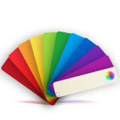
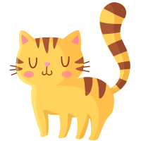

<ion-app>
  <!-- <div id="superpuesto" [style.display]="splash ? 'flex' : 'none'"> -->
  <div id="superpuesto" *ngIf="splash && !estaLogueado()">
    <div id="splash">
      
      
      
    </div>
  </div>
  <ion-router-outlet></ion-router-outlet>
</ion-app>
